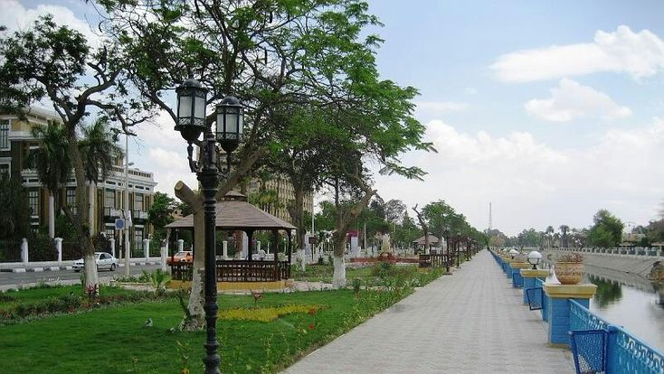

أنوبي
(اضغط مرتين للإيقاف)
مدينة الإسماعيلية واحدة من أجمل مدن القناة في مصر، تقع على الضفة الغربية لقناة السويس، وسُمّيت نسبة إلى الخديوي إسماعيل الذي ارتبط اسمه بمشروع القناة وتطوير المنطقة.
تأسست المدينة عام 1863 لتكون مقرًا إداريًا مهمًا خلال حفر قناة السويس. ومع مرور الوقت أصبحت مركزًا اقتصاديًا وعسكريًا وثقافيًا مهمًا.
خلال حرب أكتوبر 1973، لعبت الإسماعيلية دورًا وطنيًا مهمًا، فقد كانت محورًا دفاعيًا حساسًا، وارتبط اسمها بمعارك بطولية أظهرت تماسك الشعب المصري وشجاعة القوات المسلحة.
تتميز الإسماعيلية بطابع عمراني فريد يجمع بين التخطيط الأوروبي القديم والروح المصرية، وتُعرف بـ "باريس الشرق". من معالمها الشهيرة: مبنى الإرشاد التاريخي، ومنطقة الملاحة، وبحيرة التمساح. كما تُعد آلة "السمسمية" جزءًا أصيلاً من هوية المدينة الموسيقية وتاريخ المقاومة.
